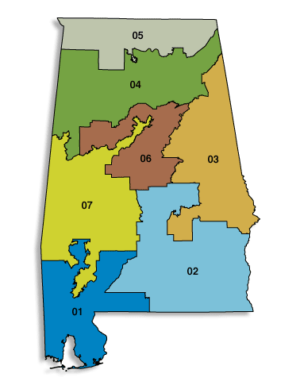

The program inputs standard US government Census Bureau files describing
the shape of each state and the population distribution inside it.
It outputs a multicolored picture (.bmp file) depicting the state,
its splitline-method districting (different colors for different districts),
and the population density inside the state (brightness-level map).
The maps (click 2-letter symbol to see map as .png graphics file; try MA or IL)
We give permission to all to re-use these images provided they
cite the Center for Range Voting, this web page, and us; the Shortest Splitline algorithm
was invented by Warren D. Smith and the program that produced the images was written by
Ivan Ryan; the underlying data is from the US Census Bureau, e.g. see
http://www.census.gov/geo/www/cob/bg2000.html.
Indiana 2007: official vs splitlined districtings.
Alabama 2007: official vs splitlined districtings.

Notes & Caveats (11 July 2007; updated 2009):
The "shortest" splitline is computed using true
spherical distance. The map shown is a
gnomonic projection
onto a plane, on which geodesics (great-circle arcs) exactly correspond to
line segments.
(If flat-map "distance" were wrongly used instead, the maps
you get usually would be visually indistinguishable from ours, but
sometimes not.)
In this program, the "line length" is defined as the distance between the two points that are part
of the district being split that are furthest apart along the line.
If the line makes multiple cuts, then this is longer than the old obsolete official
definition which only counted the in-state parts of this line segment, since
our definition now includes the out-of-district/state parts of the line segment.
Since this was easier to program, and since it is probably better in the sense it disfavors
divisions that split a district into multiple parts, the official definition has been
changed to correspond with ours!
Rare length ties between two equally-long shortest splitlines, are not currently handled correctly.
[Specifically, we cannot even recognize a tie unless using "exact" arithmetic. But actually
we are using "double-precision floating point arithmetic" which is contaminated by
slight random-seeming "roundoff errors." These cause ties (if any) to be broken
in a random-seeming manner. Because double-precision arithmetic measures 3000-mile distances
accurate to below a nanometer, this is not exactly a huge problem.]
The districts created by the program are not as accurate as they could be in
terms of population balancing. The numbers are generally ±1% fractionally. That's
because the current pixel size is approaching the limit of
what the computer can process while keeping the entire map in RAM at
once, and also without creating enormous image files, and a single pixel in a dense city
can contain 10,000 people.
(A Pennsylvania districting with maximum population
deviation of 0.4%
was allowed by a federal court 535 F.Supp. 191, M.D. Penn. 1982;
but the supreme court
in KARCHER v. DAGGETT 1983 invalidated a New Jersey districting
with a maximum deviation of 0.698% as "too unequal."
Judge M.McConnell criticized that because,
he argued, the statistical error in the Census's population estimates, exceeded 0.698% anyway.)
It is conceivable that for some state we may have accidentally
typed in the wrong number of congressmen
(remember to subtract 2 from #EVs!)
on some states. If so, the districting is
still correct, just for that wrong number of congressmen.
Conceivably our program has some bugs. It certainly mostly and usually works, and we
don't know of anything wrong, and it ran successfully for all 52 "states" (50 + PR + DC);
we just are not
currently ready to swear it is always bug-free.
The entire set of runs for all 52, took under 1 day (combined) on a single PC
from circa 2005.
If one wanted we could give high-precision coordinates for all the vertex-points
in our maps. (An N-district map has at most 2N-2 vertex-points.)
That small set of numbers by itself would exactly define the entire map. So don't
worry if you think our maps do not have high enough resolution. Worry instead that
the official maps now, do not have high enough resolution and are not exactly definable
with a few numbers.
We can make ultra-hi-resolution maps using svg (vector graphics) formats.
For example, check this one of Texas (2.2 Mbytes) if you dare.
Kari Chisholm (and several others) have suggested that district boundaries should not be
lines but rather zigzags made of census-tract boundaries (a slight perturbation
off the line – see her illustrative gif).
This has the advantages that (a) our program's input was census tract data anyhow;
(b) this way lines will not cut through houses, etc. But on the other hand,
(c) notions like
rivers, highways, bridges, county lines, and census tracts are human-defined notions,
hence can be redefined by gerrymanderers at any time;
meanwhile lines are mathematically-defined notions;
(d) this makes the computer program more complicated and more vulnerable to bugs in the census
data (although not out of reach, we could still do it);
(e) at least for urban situations as in the gif, the difference between our lines and her zigzag
would be imperceptibly small (below 1 pixel) anyway on most or all of our maps here, so don't worry
about it at least for now;
(f) right now the only way to tell which district you live in, is to consult a map,
and if you live near the boundary, it has to be a very high resolution map. That will still
be true with any districting method whatever. But our method with straight
lines is better in the sense
that you could also tell by using a GPS device and some arithmetic
(without any need
to consult a map).
If the line splits your house, that is still OK, we do not see that as an obstacle;
there are easy cures such as defining all split houses to lie on the west side, etc.
Q. What about "majority minority districts"? Somebody told me they were legally required
by the VRA.
A. Not so.
How good are they?
Compared with hypothetical perfection, we can see occasional flaws.
These are present in about 15% of all states.
Compared with the official
US districtings as of 2007,
our algorithm appears to generate as good or
better – often a lot better
– districtings about 98% of the time.
The only state we know of where the official districting
seems arguably better than the splitline algorithm's, is Colorado.
(Year-2013 official CO maps:
jpg,
gif.)
And even there, ours is arguably better too.
(The official districting is "better" in the sense it follows county lines more and
subjectively "looks good to the eye."
However it remains "worse" in the
objective sense that it has at least 50% longer "cut length" of all the
inter-district boundaries. Also, the key official high-population-density district 7,
while it may look ok in the
low-res map we gave, looks substantially more gerrymandered shown in yellow at
hi-res.)
Why?
What is so special about Colorado?
On the one hand:
The distribution of Colorado's population happens, by pure bad luck, to be concentrated near
a vertical line hence was particularly
badly suited to the Shortest Splitline Algorithm.
On the other hand:
Colorado's districts were not produced by the usual gerrymandering process.
In both CO and TX, the legislative houses were in split control in 2001, causing
them to gridlock and be unable to settle on an acceptable redistricting plan.
Therefore, CO's redistricting instead was eventually performed by a panel of federal judges
– who in CO may actually have been interested in
fairness, for an astonishingly refreshing change –
and the resulting districts were used for the 2002 congressional elections.
But the Republicans
gained control of both CO houses in 2002 and promptly produced a
re-redistricting plan to give themselves a congressional majority.
This, as with their similar Texas gerrymander,
broke with the 200-year-old practice of redrawing congressional district
boundaries only in 10-year multiples, after the decennial census.
But the Republican gerrymander was thrown out by a CO supreme court ruling on 1 December 2003.
This court demanded the court-drawn 2002 districts be re-used in the 2004 elections,
because Colorado's constitution demanded decennial redistrictings only.
(The Republicans did succeed in gerrymandering Texas, though, which had a different
constitution.)
Republican plaintiffs then appealed to the US federal supreme court to make their
gerrymandering happen. But the supremes decided 6-3 (Scalia, Rehnquist, and Thomas
dissenting) not to take the case, causing the court-ordered districts to stand for the 2006
elections. Then CO Republicans again sued, again taking it all the way to the US supreme court
to get the court-ordered plan replaced by the Republican gerrymander. This time the supremes
unanimously
ruled against the plaintiffs
(
LANCE v. DENNIS, 05-555 &
LANCE v. COFFMAN 06-641), noting
This injury is precisely the kind of undifferentiated, generalized grievance about the
conduct of government that we have refused to countenance in the past.
so the districts will again be used in CO's 2008 elections.
Other Interesting Links
Brian Olson's computer districtings,
(different algorithm; more complicated, tunable,
and runtime much longer;
but arguably produces "better" districts).
Local copy of Olson's 2000-census districtings;
note these pictures include both the official districting and Olson's
algorithm's, and with our splitline pictures in the links near the top of the present page
your eyeball can do a 3-way comparison. (Note Olson's graphics use maritime bogo-boundaries
of states within water areas, this does not matter for his purposes and
don't be confused by the "strange state outlines" he therefore sometimes has.)
See entire USA (lower 48) districted by Olson state-by-state
(published in Washington Post
WonkBlog
13 January 2016).
Review of theoretical questions in districting.
C.G.P.Grey's 3.5-minute youtube
video
attempting to describe the shortest splitline method.
New "min-variance splitline" algorithm suggested (April 2016) by Noam Yorav-Raphael.
May be better than my "shortest splitline algorithm." Other variants suggested by Brian Langstraat and
Roy Minet. Now discussed on
splitline variants page.
{kind=link}
{kind=link}
{kind=link}
{kind=link}
{kind=link}
{kind=link}
{kind=link}
{kind=link}
{kind=link}
{kind=link}
{kind=link}
{kind=link}
{kind=link}
{kind=link}
{kind=link}
{kind=link}
{kind=link}
{kind=link}
{kind=link}
{kind=link}
{kind=link}
{kind=link}
{kind=link}
{kind=link}
{kind=link}
{kind=link}
{kind=link}
{kind=link}
{kind=link}
{kind=link}
{kind=link}
{kind=link}
{kind=link}
{kind=link}
{kind=link}
{kind=link}
{kind=link}
{kind=link}
{kind=link}
{kind=link}
{kind=link}
{kind=link}
{kind=link}
{kind=link}
{kind=link}
{kind=link}
{kind=link}
{kind=link}
{kind=link}
{kind=link}
{kind=link}
{kind=link}
{kind=link}


{kind=link}
{kind=link}
{kind=link}
{kind=link}
{kind=link}
{kind=link}
{kind=link}
{kind=link}